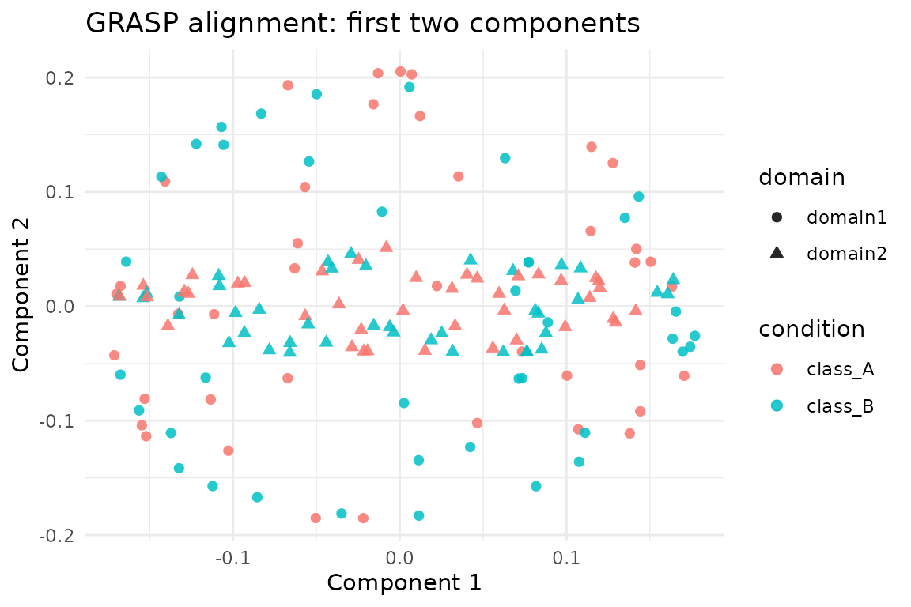

Overview
grasp() aligns two graph domains by computing spectral
embeddings, building multi-scale diffusion descriptors, and solving for
a functional map plus a node assignment. The method is unsupervised—the
latent classes are only consulted in this vignette for diagnostic
plots.
We work with the two graph domains provided by
alignment_benchmark so the results are directly comparable
to the cone_align, parrot, and
kema vignettes.
Loading the Benchmark Pair
alignment_benchmark <- manifoldalign::alignment_benchmark
pair_domains <- alignment_benchmark$domains[1:2]
pair_multidesign <- lapply(pair_domains, function(dom) {
multidesign::multidesign(dom$x, dom$design)
})
pair_names <- names(pair_multidesign)
node_counts <- vapply(pair_multidesign, function(dom) nrow(dom$x), integer(1))
hd_pair <- multidesign::hyperdesign(pair_multidesign)Running grasp
grasp_internal <- grasp(
hd_pair,
ncomp = 20,
q_descriptors = 80,
sigma = 0.8,
lambda = 0.1,
solver = "linear"
)
str(grasp_internal$assignment)
#> int [1:80] 79 66 29 53 37 13 7 61 17 65 ...Assignment Diagnostics
The assignment component maps nodes in the second domain
to nodes in the first (reference) domain. We compare the assigned pairs
with the underlying class labels to quantify alignment quality—remember
that the optimiser itself never sees these labels.
assignment <- grasp_internal$assignment
ref_design <- pair_multidesign[[1]]$design
cmp_design <- pair_multidesign[[2]]$design
class_accuracy <- mean(ref_design$condition == cmp_design$condition[assignment])
identity_fraction <- mean(assignment == seq_along(assignment))
tibble(
metric = c("Class agreement", "Exact identity"),
value = c(class_accuracy, identity_fraction)
)
#> # A tibble: 2 × 2
#> metric value
#> <chr> <dbl>
#> 1 Class agreement 0.475
#> 2 Exact identity 0.0125
n_ref <- node_counts[1]
embed1 <- grasp_internal$s[seq_len(n_ref), , drop = FALSE]
embed2 <- grasp_internal$s[n_ref + seq_len(n_ref), , drop = FALSE]
final_err <- sqrt(mean(rowSums((embed1 - embed2)^2)))
tibble(
metric = "Post-alignment RMS error",
value = final_err
)
#> # A tibble: 1 × 2
#> metric value
#> <chr> <dbl>
#> 1 Post-alignment RMS error 1.28Visualising the Aligned Embeddings
We stack the aligned embeddings for both domains (as returned by
grasp()) and colour points by their latent class.
embed1 <- grasp_internal$s[seq_len(n_ref), , drop = FALSE]
embed2 <- grasp_internal$s[n_ref + seq_len(n_ref), , drop = FALSE]
score_tbl <- as_tibble(rbind(embed1, embed2), .name_repair = "minimal")
colnames(score_tbl) <- paste0("comp", seq_len(ncol(score_tbl)))
scores <- score_tbl %>%
mutate(
sample = seq_len(nrow(.)),
domain = rep(pair_names, each = nrow(embed1)),
condition = c(ref_design$condition, cmp_design$condition[assignment])
)
ggplot(scores, aes(x = comp1, y = comp2, colour = condition, shape = domain)) +
geom_point(size = 2, alpha = 0.85) +
labs(title = "GRASP alignment: first two components",
x = "Component 1", y = "Component 2") +
theme_minimal()
Summary
-
grasp()performs spectral alignment without supervision; class labels are only used here for evaluation. - The post-alignment RMS error can be used as a quick sanity check that the returned embeddings are in a comparable coordinate system.
- Because all alignment vignettes reuse the same
alignment_benchmarkdomains, you can compare GRASP, CONE-Align, PARROT, GPCA, and KEMA directly.